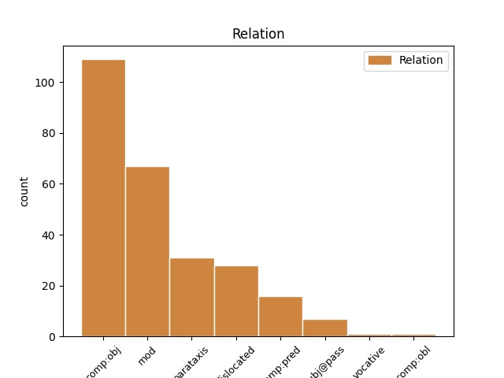
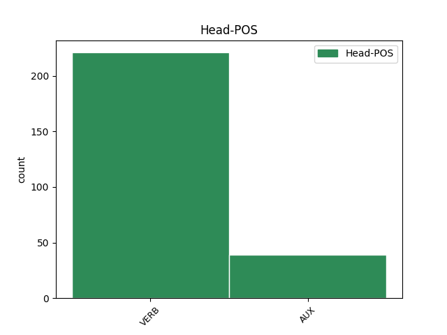
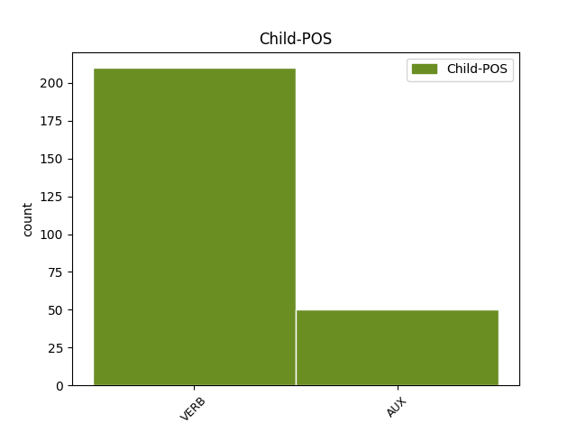

Distribution of features within this leaf



Agreement Rules sorted by frequency.
- When the dependent token is the direct object complements(comp:obj) of the head token, and the dependent token is VERB.
1 jah _ _ _ _ 0 _ _ _
2 ƕan _ _ _ _ 0 _ _ _
3 filu _ _ _ _ 0 _ _ _
4 in _ _ _ _ 0 _ _ _
5 Aifaison _ _ _ _ 0 _ _ _
6 andbahtida andbahtjan VERB V- Mood=Ind|Number=Sing|Person=3|Tense=Past|VerbForm=Fin|Voice=Act 10 comp:obj _ ref=2TIM_1.18
7 mis _ _ _ _ 0 _ _ _
8 waila _ _ _ _ 0 _ _ _
9 þu _ _ _ _ 0 _ _ _
10 kant kunnan VERB V- Mood=Ind|Number=Sing|Person=2|Tense=Pres|VerbForm=Fin|Voice=Act 0 _ _ _
1 triggws _ _ _ _ 0 _ _ _
2 saei _ _ _ _ 0 _ _ _
3 laþoda laþon VERB V- Mood=Ind|Number=Sing|Person=3|Tense=Past|VerbForm=Fin|Voice=Act 0 _ _ _
4 izwis _ _ _ _ 0 _ _ _
5 saei _ _ _ _ 0 _ _ _
6 jah _ _ _ _ 0 _ _ _
7 taujiþ taujan VERB V- Mood=Ind|Number=Sing|Person=3|Tense=Pres|VerbForm=Fin|Voice=Act 3 mod _ ref=1THESS_5.24
1 aþþan _ _ _ _ 0 _ _ _
2 tulgus _ _ _ _ 0 _ _ _
3 grunduwaddjus _ _ _ _ 0 _ _ _
4 gudis _ _ _ _ 0 _ _ _
5 standiþ standan VERB V- Mood=Ind|Number=Sing|Person=3|Tense=Pres|VerbForm=Fin|Voice=Act 0 _ _ _
6 habands _ _ _ _ 0 _ _ _
7 sigljo _ _ _ _ 0 _ _ _
8 þata _ _ _ _ 0 _ _ _
9 kunþa kunnan VERB V- Mood=Ind|Number=Sing|Person=3|Tense=Past|VerbForm=Fin|Voice=Act 5 parataxis _ LId=1|ref=2TIM_2.19
10 frauja _ _ _ _ 0 _ _ _
11 þans _ _ _ _ 0 _ _ _
12 þaiei _ _ _ _ 0 _ _ _
13 sind _ _ _ _ 0 _ _ _
14 is _ _ _ _ 0 _ _ _
15 jah _ _ _ _ 0 _ _ _
16 afstandai _ _ _ _ 0 _ _ _
17 af _ _ _ _ 0 _ _ _
18 unselein _ _ _ _ 0 _ _ _
19 ƕazuh _ _ _ _ 0 _ _ _
20 saei _ _ _ _ 0 _ _ _
21 namnjai _ _ _ _ 0 _ _ _
22 namo _ _ _ _ 0 _ _ _
23 fraujins _ _ _ _ 0 _ _ _
1 saei _ _ _ _ 0 _ _ _
2 atstaig at-steigan VERB V- Mood=Ind|Number=Sing|Person=3|Tense=Past|VerbForm=Fin|Voice=Act 4 dislocated _ ref=EPH_4.10
3 sa _ _ _ _ 0 _ _ _
4 ist wisan AUX V- Mood=Ind|Number=Sing|Person=3|Tense=Pres|VerbForm=Fin|Voice=Act 0 _ _ _
5 jah _ _ _ _ 0 _ _ _
6 saei _ _ _ _ 0 _ _ _
7 usstaig _ _ _ _ 0 _ _ _
8 ufar _ _ _ _ 0 _ _ _
9 allans _ _ _ _ 0 _ _ _
10 himinans _ _ _ _ 0 _ _ _
11 ei _ _ _ _ 0 _ _ _
12 usfullidedi _ _ _ _ 0 _ _ _
13 allata _ _ _ _ 0 _ _ _
1 þatei _ _ _ _ 0 _ _ _
2 god _ _ _ _ 0 _ _ _
3 sijai wisan AUX V- Mood=Opt|Number=Sing|Person=3|Tense=Pres|VerbForm=Fin|Voice=Act 4 comp:obj _ LId=1|ref=1THESS_5.21
4 gahabaiþ ga-haban VERB V- Mood=Opt|Number=Plur|Person=2|Tense=Pres|VerbForm=Fin|Voice=Act 0 _ _ _
1 akei _ _ _ _ 0 _ _ _
2 ni _ _ _ _ 0 _ _ _
3 þeihand _ _ _ _ 0 _ _ _
4 du _ _ _ _ 0 _ _ _
5 filusnai _ _ _ _ 0 _ _ _
6 unte _ _ _ _ 0 _ _ _
7 unwiti _ _ _ _ 0 _ _ _
8 ize _ _ _ _ 0 _ _ _
9 swikunþ _ _ _ _ 0 _ _ _
10 wairþiþ wairþan VERB V- Mood=Ind|Number=Sing|Person=3|Tense=Pres|VerbForm=Fin|Voice=Act 0 _ _ _
11 allaim _ _ _ _ 0 _ _ _
12 swaswe _ _ _ _ 0 _ _ _
13 jah _ _ _ _ 0 _ _ _
14 jainaize _ _ _ _ 0 _ _ _
15 was wisan AUX V- Mood=Ind|Number=Sing|Person=3|Tense=Past|VerbForm=Fin|Voice=Act 10 mod _ LId=1|ref=2TIM_3.9
1 jah _ _ _ _ 0 _ _ _
2 izwis _ _ _ _ 0 _ _ _
3 simle _ _ _ _ 0 _ _ _
4 wisandans _ _ _ _ 0 _ _ _
5 framaþidans _ _ _ _ 0 _ _ _
6 jah _ _ _ _ 0 _ _ _
7 fijands _ _ _ _ 0 _ _ _
8 gahugdai _ _ _ _ 0 _ _ _
9 in _ _ _ _ 0 _ _ _
10 waurstwam _ _ _ _ 0 _ _ _
11 ubilaim _ _ _ _ 0 _ _ _
12 iþ _ _ _ _ 0 _ _ _
13 nu _ _ _ _ 0 _ _ _
14 gafriþodai _ _ _ _ 0 _ _ _
15 in _ _ _ _ 0 _ _ _
16 leika _ _ _ _ 0 _ _ _
17 mammons _ _ _ _ 0 _ _ _
18 is _ _ _ _ 0 _ _ _
19 þairh _ _ _ _ 0 _ _ _
20 dauþu _ _ _ _ 0 _ _ _
21 du _ _ _ _ 0 _ _ _
22 atsatjan _ _ _ _ 0 _ _ _
23 izwis _ _ _ _ 0 _ _ _
24 weihans _ _ _ _ 0 _ _ _
25 jah _ _ _ _ 0 _ _ _
26 unwammans _ _ _ _ 0 _ _ _
27 jah _ _ _ _ 0 _ _ _
28 usfairinans _ _ _ _ 0 _ _ _
29 faura _ _ _ _ 0 _ _ _
30 imma _ _ _ _ 0 _ _ _
31 jabai _ _ _ _ 0 _ _ _
32 sweþauh _ _ _ _ 0 _ _ _
33 þairhwisiþ _ _ _ _ 0 _ _ _
34 in _ _ _ _ 0 _ _ _
35 galaubeinai _ _ _ _ 0 _ _ _
36 gaþwastidai _ _ _ _ 0 _ _ _
37 jah _ _ _ _ 0 _ _ _
38 gatulgidai _ _ _ _ 0 _ _ _
39 jah _ _ _ _ 0 _ _ _
40 ni _ _ _ _ 0 _ _ _
41 afwagidai _ _ _ _ 0 _ _ _
42 af _ _ _ _ 0 _ _ _
43 wenai _ _ _ _ 0 _ _ _
44 aiwaggeljons _ _ _ _ 0 _ _ _
45 þoei _ _ _ _ 0 _ _ _
46 hausideduþ _ _ _ _ 0 _ _ _
47 sei _ _ _ _ 0 _ _ _
48 merida merjan VERB V- Mood=Ind|Number=Sing|Person=3|Tense=Past|VerbForm=Fin|Voice=Act 49 comp:pred _ ref=COL_1.23
49 ist wisan AUX V- Mood=Ind|Number=Sing|Person=3|Tense=Pres|VerbForm=Fin|Voice=Act 0 _ _ _
50 in _ _ _ _ 0 _ _ _
51 alla _ _ _ _ 0 _ _ _
52 gaskaft _ _ _ _ 0 _ _ _
53 þo _ _ _ _ 0 _ _ _
54 uf _ _ _ _ 0 _ _ _
55 himina _ _ _ _ 0 _ _ _
56 þizozei _ _ _ _ 0 _ _ _
57 warþ _ _ _ _ 0 _ _ _
58 ik _ _ _ _ 0 _ _ _
59 Pawlus _ _ _ _ 0 _ _ _
60 andbahts _ _ _ _ 0 _ _ _
1 niba _ _ _ _ 0 _ _ _
2 saei _ _ _ _ 0 _ _ _
3 wisiþ wisan VERB V- Mood=Ind|Number=Sing|Person=3|Tense=Pres|VerbForm=Fin|Voice=Act 6 subj@pass _ LId=3|ref=JOHN_15.6
4 in _ _ _ _ 0 _ _ _
5 mis _ _ _ _ 0 _ _ _
6 uswairpada us-wairpan VERB V- Mood=Ind|Number=Sing|Person=3|Tense=Pres|VerbForm=Fin|Voice=Pass 0 _ _ _
7 ut _ _ _ _ 0 _ _ _
8 swe _ _ _ _ 0 _ _ _
9 weinatains _ _ _ _ 0 _ _ _
10 jah _ _ _ _ 0 _ _ _
11 gaþaursniþ _ _ _ _ 0 _ _ _
12 jah _ _ _ _ 0 _ _ _
13 galisada _ _ _ _ 0 _ _ _
14 jah _ _ _ _ 0 _ _ _
15 in _ _ _ _ 0 _ _ _
16 fon _ _ _ _ 0 _ _ _
17 galagjand _ _ _ _ 0 _ _ _
18 jah _ _ _ _ 0 _ _ _
19 inbrannjada _ _ _ _ 0 _ _ _
1 unte _ _ _ _ 0 _ _ _
2 swaswe _ _ _ _ 0 _ _ _
3 ufarassus _ _ _ _ 0 _ _ _
4 ist wisan AUX V- Mood=Ind|Number=Sing|Person=3|Tense=Pres|VerbForm=Fin|Voice=Act 15 dislocated _ LId=1|ref=2COR_1.5
5 þulaine _ _ _ _ 0 _ _ _
6 Xristaus _ _ _ _ 0 _ _ _
7 in _ _ _ _ 0 _ _ _
8 uns _ _ _ _ 0 _ _ _
9 swa _ _ _ _ 0 _ _ _
10 jah _ _ _ _ 0 _ _ _
11 þairh _ _ _ _ 0 _ _ _
12 Xristu _ _ _ _ 0 _ _ _
13 ufar _ _ _ _ 0 _ _ _
14 filu _ _ _ _ 0 _ _ _
15 ist wisan AUX V- Mood=Ind|Number=Sing|Person=3|Tense=Pres|VerbForm=Fin|Voice=Act 0 _ _ _
16 jah _ _ _ _ 0 _ _ _
17 gaþrafsteins _ _ _ _ 0 _ _ _
18 unsara _ _ _ _ 0 _ _ _
1 jabai _ _ _ _ 0 _ _ _
2 qiþai _ _ _ _ 0 _ _ _
3 auso _ _ _ _ 0 _ _ _
4 þatei _ _ _ _ 0 _ _ _
5 ni _ _ _ _ 0 _ _ _
6 im _ _ _ _ 0 _ _ _
7 augo _ _ _ _ 0 _ _ _
8 ni _ _ _ _ 0 _ _ _
9 im wisan AUX V- Mood=Ind|Number=Sing|Person=1|Tense=Pres|VerbForm=Fin|Voice=Act 16 parataxis _ LId=1|ref=1COR_12.16
10 þis _ _ _ _ 0 _ _ _
11 leikis _ _ _ _ 0 _ _ _
12 ni _ _ _ _ 0 _ _ _
13 at _ _ _ _ 0 _ _ _
14 þamma _ _ _ _ 0 _ _ _
15 leika _ _ _ _ 0 _ _ _
16 nist nist VERB V- Mood=Ind|Number=Sing|Person=3|Tense=Pres|VerbForm=Fin|Voice=Act 0 _ _ _
17 us _ _ _ _ 0 _ _ _
18 þamma _ _ _ _ 0 _ _ _
19 leika _ _ _ _ 0 _ _ _
1 aþþan _ _ _ _ 0 _ _ _
2 anstai _ _ _ _ 0 _ _ _
3 gudis _ _ _ _ 0 _ _ _
4 im wisan AUX V- Mood=Ind|Number=Sing|Person=1|Tense=Pres|VerbForm=Fin|Voice=Act 0 _ _ _
5 saei _ _ _ _ 0 _ _ _
6 im wisan AUX V- Mood=Ind|Number=Sing|Person=1|Tense=Pres|VerbForm=Fin|Voice=Act 4 comp:pred _ LId=1|ref=1COR_15.10
7 jas _ _ _ _ 0 _ _ _
8 so _ _ _ _ 0 _ _ _
9 ansts _ _ _ _ 0 _ _ _
10 is _ _ _ _ 0 _ _ _
11 in _ _ _ _ 0 _ _ _
12 mis _ _ _ _ 0 _ _ _
13 halka _ _ _ _ 0 _ _ _
14 ni _ _ _ _ 0 _ _ _
15 warþ _ _ _ _ 0 _ _ _
16 ak _ _ _ _ 0 _ _ _
17 managizo _ _ _ _ 0 _ _ _
18 im _ _ _ _ 0 _ _ _
19 allaim _ _ _ _ 0 _ _ _
20 usaiwida _ _ _ _ 0 _ _ _
21 aþþan _ _ _ _ 0 _ _ _
22 ni _ _ _ _ 0 _ _ _
23 ik _ _ _ _ 0 _ _ _
24 ak _ _ _ _ 0 _ _ _
25 ansts _ _ _ _ 0 _ _ _
26 gudis _ _ _ _ 0 _ _ _
27 miþ _ _ _ _ 0 _ _ _
28 mis _ _ _ _ 0 _ _ _
1 akei _ _ _ _ 0 _ _ _
2 þan _ _ _ _ 0 _ _ _
3 sweþauh _ _ _ _ 0 _ _ _
4 ni _ _ _ _ 0 _ _ _
5 kunnandans _ _ _ _ 0 _ _ _
6 guþ _ _ _ _ 0 _ _ _
7 þaim _ _ _ _ 0 _ _ _
8 þoei _ _ _ _ 0 _ _ _
9 wistai _ _ _ _ 0 _ _ _
10 ni _ _ _ _ 0 _ _ _
11 sind wisan AUX V- Mood=Ind|Number=Plur|Person=3|Tense=Pres|VerbForm=Fin|Voice=Act 13 comp:obl _ LId=1|ref=GAL_4.8
12 guda _ _ _ _ 0 _ _ _
13 skalkinodeduþ skalkinon VERB V- Mood=Ind|Number=Plur|Person=2|Tense=Past|VerbForm=Fin|Voice=Act 0 _ _ _
Disagree Examples:
1 ganimiþ ga-niman VERB V- Mood=Imp|Number=Plur|Person=2|Tense=Pres|VerbForm=Fin|Voice=Act 0 _ _ _
2 ƕa _ _ _ _ 0 _ _ _
3 sijai wisan AUX V- Mood=Opt|Number=Sing|Person=3|Tense=Pres|VerbForm=Fin|Voice=Act 1 comp:obj _ LId=1|ref=MATT_9.13
1 ni _ _ _ _ 0 _ _ _
2 waiht _ _ _ _ 0 _ _ _
3 auk _ _ _ _ 0 _ _ _
4 ist wisan AUX V- Mood=Ind|Number=Sing|Person=3|Tense=Pres|VerbForm=Fin|Voice=Act 0 _ _ _
5 gahuliþ _ _ _ _ 0 _ _ _
6 þatei _ _ _ _ 0 _ _ _
7 ni _ _ _ _ 0 _ _ _
8 andhuljaidau and-huljan VERB V- Mood=Opt|Number=Sing|Person=3|Tense=Pres|VerbForm=Fin|Voice=Pass 4 comp:pred _ ref=MATT_10.26
9 jah _ _ _ _ 0 _ _ _
10 fulgin _ _ _ _ 0 _ _ _
11 þatei _ _ _ _ 0 _ _ _
12 ni _ _ _ _ 0 _ _ _
13 ufkunnaidau _ _ _ _ 0 _ _ _
1 þatei _ _ _ _ 0 _ _ _
2 qiþa qiþan VERB V- Mood=Ind|Number=Sing|Person=1|Tense=Pres|VerbForm=Fin|Voice=Act 6 comp:obj _ ref=MATT_10.27
3 izwis _ _ _ _ 0 _ _ _
4 in _ _ _ _ 0 _ _ _
5 riqiza _ _ _ _ 0 _ _ _
6 qiþaiþ qiþan VERB V- Mood=Opt|Number=Plur|Person=2|Tense=Pres|VerbForm=Fin|Voice=Act 0 _ _ _
7 in _ _ _ _ 0 _ _ _
8 liuhada _ _ _ _ 0 _ _ _
9 jah _ _ _ _ 0 _ _ _
10 þatei _ _ _ _ 0 _ _ _
11 in _ _ _ _ 0 _ _ _
12 auso _ _ _ _ 0 _ _ _
13 gahauseiþ _ _ _ _ 0 _ _ _
14 merjaiþ _ _ _ _ 0 _ _ _
15 ana _ _ _ _ 0 _ _ _
16 hrotam _ _ _ _ 0 _ _ _
1 þatei _ _ _ _ 0 _ _ _
2 qiþa _ _ _ _ 0 _ _ _
3 izwis _ _ _ _ 0 _ _ _
4 in _ _ _ _ 0 _ _ _
5 riqiza _ _ _ _ 0 _ _ _
6 qiþaiþ _ _ _ _ 0 _ _ _
7 in _ _ _ _ 0 _ _ _
8 liuhada _ _ _ _ 0 _ _ _
9 jah _ _ _ _ 0 _ _ _
10 þatei _ _ _ _ 0 _ _ _
11 in _ _ _ _ 0 _ _ _
12 auso _ _ _ _ 0 _ _ _
13 gahauseiþ ga-hausjan VERB V- Mood=Ind|Number=Plur|Person=2|Tense=Pres|VerbForm=Fin|Voice=Act 14 comp:obj _ ref=MATT_10.27
14 merjaiþ merjan VERB V- Mood=Opt|Number=Plur|Person=2|Tense=Pres|VerbForm=Fin|Voice=Act 0 _ _ _
15 ana _ _ _ _ 0 _ _ _
16 hrotam _ _ _ _ 0 _ _ _
1 gaggandans _ _ _ _ 0 _ _ _
2 gateihiþ ga-teihan VERB V- Mood=Imp|Number=Plur|Person=2|Tense=Pres|VerbForm=Fin|Voice=Act 0 _ _ _
3 Iohanne _ _ _ _ 0 _ _ _
4 þatei _ _ _ _ 0 _ _ _
5 gahauseiþ ga-hausjan VERB V- Mood=Ind|Number=Plur|Person=2|Tense=Pres|VerbForm=Fin|Voice=Act 2 comp:obj _ ref=MATT_11.4
6 jah _ _ _ _ 0 _ _ _
7 gasaiƕiþ _ _ _ _ 0 _ _ _